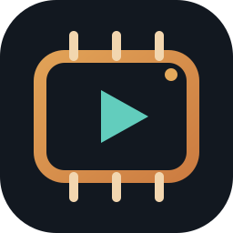
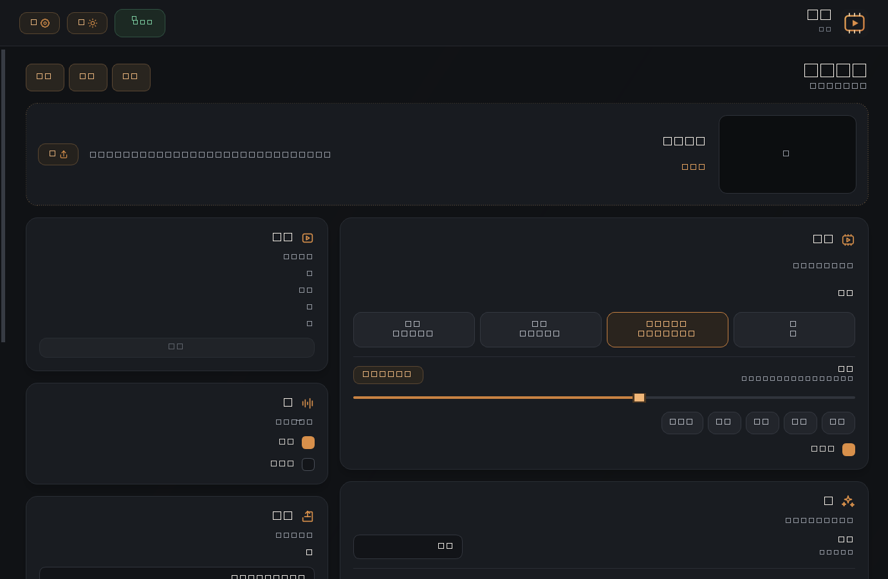

برنامج ويندوز عربي يحسّن الفيديو والصور على جهازك عبر FFmpeg ومحرك ذكاء اصطناعي يعمل على بطاقة الرسوم. لا رفع، لا اشتراك، لا انتظار في طابور خادم.

الواجهة بالوضع الداكن — ويمكن التبديل للفاتح من رأس البرنامج
قرار واضح في كل خطوة، وقيم افتراضية محافظة حتى لا تبدو النتيجة مصطنعة.
Real‑CUGAN Pro و Real‑ESRGAN و AnimeVideo AI و Anime4K GAN — تعمل عبر Vulkan على بطاقة الرسوم، لا على خادم بعيد.
JPG و PNG و WebP و BMP و TIFF تمرّ عبر نفس المحرك. الواجهة تتحول تلقائيًا لوضع الصور وتخفي ما لا يخصّها.
أزرار الدقة تعمل كحدٍّ أدنى لا أقصى: نكبّر الصورة الصغيرة، ولا نصغّر صورة أكبر من المقاس المختار.
رفع معدل الإطارات حتى 120fps مع توليد إطارات بينية بنموذج RIFE 4.26 أو بتحليل الحركة التقليدي.
طبقتان فوق بعض بحافة سحب برتقالية، تكبير بعجلة الماوس وتحريك بالسحب — للفيديو وللصور.
يفحص مساحة القرص، ويعيد المحاولة تلقائيًا بمسار أكثر ثباتًا إذا فشل التسريع أو نفدت الذاكرة — بنفس الدقة وFPS.
ثلاث خطوات، مرة واحدة فقط.
winget install Gyan.FFmpeg ثم أعد تشغيل الجهاز.
VideoCraftStudio.exe في أي وقت.
محرك AI اختياري: بدون بطاقة متوافقة يعمل البرنامج بالمسار التقليدي بنفس الدقة وFPS.
| نظام التشغيل | ويندوز 10 أو 11 (64‑بت) |
| Python | 3.11 أو أحدث |
| FFmpeg | مطلوب، مضاف إلى PATH |
| بطاقة الرسوم | NVIDIA بدعم Vulkan — جُرّب على GTX 1650 |
| المساحة | ~700MB بعد فك الضغط، بالإضافة لمساحة التصدير |